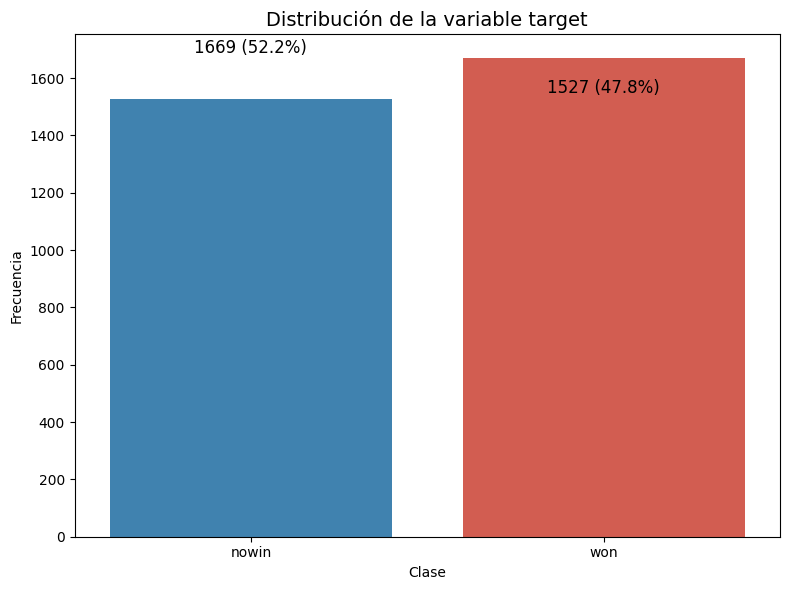
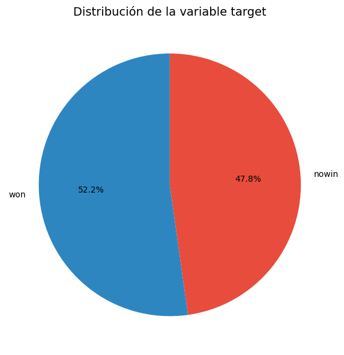
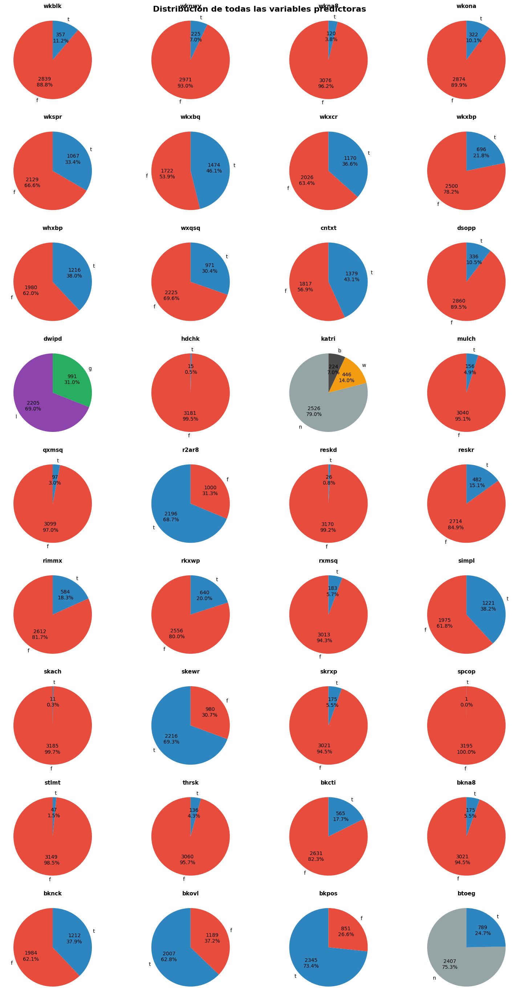
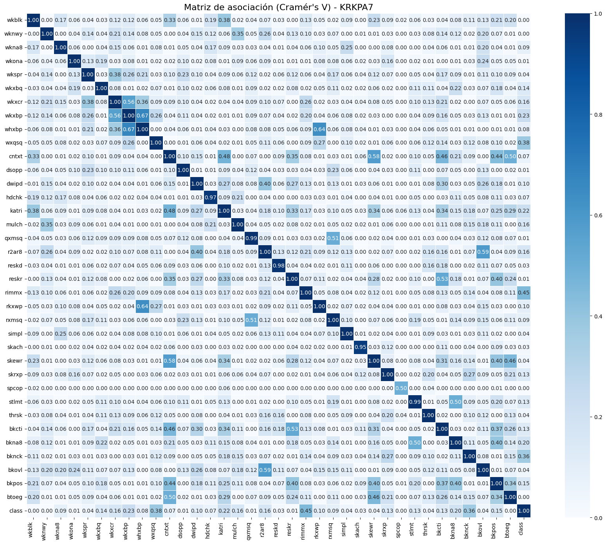
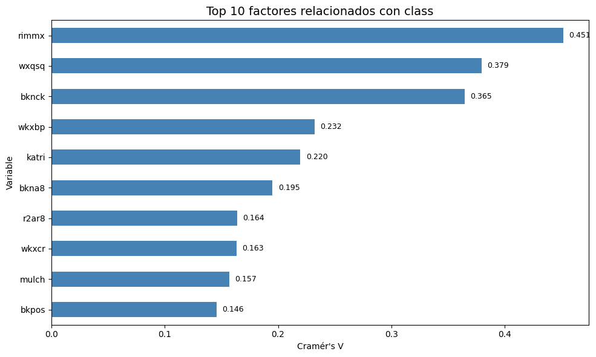
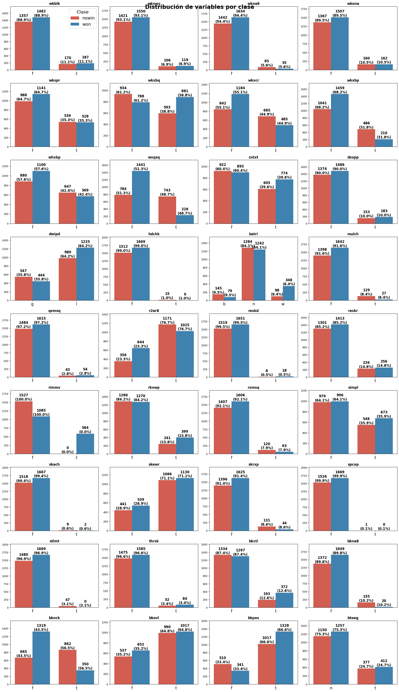
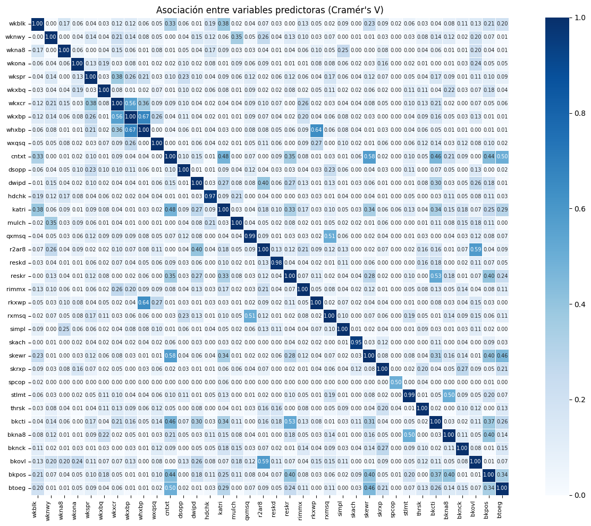
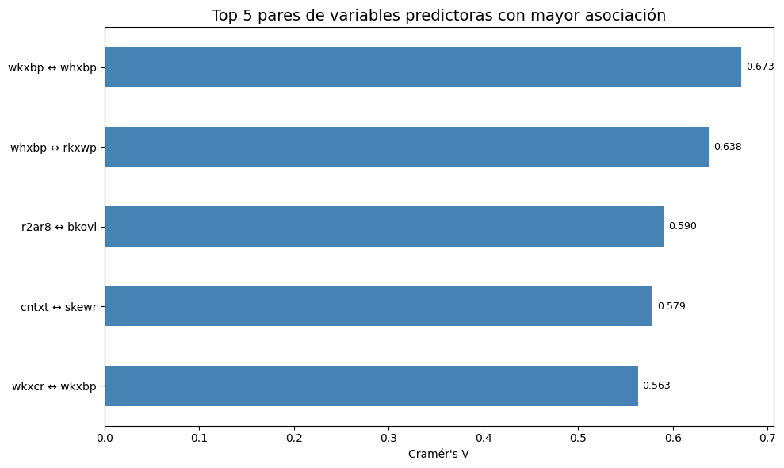

Análisis exploratorio de datos (EDA)#
Librerías#
import numpy as np
import pandas as pd
import matplotlib.pyplot as plt
import seaborn as sns
from scipy.stats import chi2_contingency
import warnings
warnings.filterwarnings('ignore')
# Configurar visualización
pd.set_option('display.max_columns', None)
pd.set_option('display.max_rows', 100)
Asignar nombres de columnas en el dataset#
# Nombres de columnas
nombres = [
"wkblk", "wknwy", "wkna8", "wkona", "wkspr", "wkxbq", "wkxcr", "wkxbp",
"whxbp", "wxqsq", "cntxt", "dsopp", "dwipd", "hdchk", "katri", "mulch",
"qxmsq", "r2ar8", "reskd", "reskr", "rimmx", "rkxwp", "rxmsq", "simpl",
"skach", "skewr", "skrxp", "spcop", "stlmt", "thrsk", "bkcti", "bkna8",
"bknck", "bkovl", "bkpos", "btoeg", "class"
]
Análisis de la variable target “class”#
# Cargar datos
datos = pd.read_csv("kr-vs-kp.data", header=None, names=nombres)
# Convertir a tipo 'category' (equivalente a factor en R)
for col in datos.columns:
datos[col] = datos[col].astype('category')
# Inspección inicial
print("Dimensiones:", datos.shape)
print("\nTipos de datos:")
print(datos.dtypes)
print("\nPrimeras filas:")
print(datos.head())
print("Valores nulos por columna:")
print(datos.isnull().sum())
print("\nNo hay NAs en el dataset.")
Dimensiones: (3196, 37)
Tipos de datos:
wkblk category
wknwy category
wkna8 category
wkona category
wkspr category
wkxbq category
wkxcr category
wkxbp category
whxbp category
wxqsq category
cntxt category
dsopp category
dwipd category
hdchk category
katri category
mulch category
qxmsq category
r2ar8 category
reskd category
reskr category
rimmx category
rkxwp category
rxmsq category
simpl category
skach category
skewr category
skrxp category
spcop category
stlmt category
thrsk category
bkcti category
bkna8 category
bknck category
bkovl category
bkpos category
btoeg category
class category
dtype: object
Primeras filas:
wkblk wknwy wkna8 wkona wkspr wkxbq wkxcr wkxbp whxbp wxqsq cntxt dsopp \
0 f f f f f f f f f f f f
1 f f f f t f f f f f f f
2 f f f f t f t f f f f f
3 f f f f f f f f t f f f
4 f f f f f f f f f f f f
dwipd hdchk katri mulch qxmsq r2ar8 reskd reskr rimmx rkxwp rxmsq simpl \
0 l f n f f t f f f f f f
1 l f n f f t f f f f f f
2 l f n f f t f f f f f f
3 l f n f f t f f f t f f
4 l f n f f t f f f f f t
skach skewr skrxp spcop stlmt thrsk bkcti bkna8 bknck bkovl bkpos btoeg \
0 f t f f f f f f f t t n
1 f t f f f f f f f t t n
2 f t f f f f f f f t t n
3 f t f f f f f f f t t n
4 f t f f f f f f f t t n
class
0 won
1 won
2 won
3 won
4 won
Valores nulos por columna:
wkblk 0
wknwy 0
wkna8 0
wkona 0
wkspr 0
wkxbq 0
wkxcr 0
wkxbp 0
whxbp 0
wxqsq 0
cntxt 0
dsopp 0
dwipd 0
hdchk 0
katri 0
mulch 0
qxmsq 0
r2ar8 0
reskd 0
reskr 0
rimmx 0
rkxwp 0
rxmsq 0
simpl 0
skach 0
skewr 0
skrxp 0
spcop 0
stlmt 0
thrsk 0
bkcti 0
bkna8 0
bknck 0
bkovl 0
bkpos 0
btoeg 0
class 0
dtype: int64
No hay NAs en el dataset.
# Tabla de frecuencias
tabla_target = datos['class'].value_counts().reset_index()
tabla_target.columns = ['class', 'Frecuencia']
tabla_target['Porcentaje'] = round((tabla_target['Frecuencia'] / tabla_target['Frecuencia'].sum()) * 100, 1)
tabla_target['Etiqueta'] = tabla_target['Frecuencia'].astype(str) + " (" + tabla_target['Porcentaje'].astype(str) + "%)"
print("Tabla de frecuencias de class:")
print(tabla_target)
# Gráfico de barras
plt.figure(figsize=(8, 6))
sns.barplot(data=tabla_target, x='class', y='Frecuencia',
palette=['#2E86C1', '#E74C3C'])
for i, row in tabla_target.iterrows():
plt.text(i, row['Frecuencia'] + 20, row['Etiqueta'], ha='center', fontsize=12)
plt.title('Distribución de la variable target', fontsize=14)
plt.xlabel('Clase')
plt.ylabel('Frecuencia')
plt.tight_layout()
plt.show()
# Gráfico de torta
plt.figure(figsize=(8, 6))
plt.pie(tabla_target['Frecuencia'], labels=tabla_target['class'], autopct='%1.1f%%',
colors=['#2E86C1', '#E74C3C'], startangle=90)
plt.title('Distribución de la variable target', fontsize=14)
plt.tight_layout()
plt.show()
Tabla de frecuencias de class:
class Frecuencia Porcentaje Etiqueta
0 won 1669 52.2 1669 (52.2%)
1 nowin 1527 47.8 1527 (47.8%)


En 1669 partidas, el 52.2%, resultó ‘won’, es decir que las blancas ganaron, y en 1527 partidas, el 47.8%, resultó ‘nowin’, es decir que el peón negro logró coronar o las negras consiguieron tablas; la diferencia entre ambas clases es de solo 4.4 puntos porcentuales, lo que indica que el dataset no tiene un sesgo significativo hacia ninguna clase.
Análisis de las variables independientes#
# Calcular frecuencias
vars_predictoras = [col for col in datos.columns if col != 'class']
frecuencias_list = []
for var in vars_predictoras:
for valor in datos[var].unique():
n = (datos[var] == valor).sum()
pct = round((n / len(datos)) * 100, 1)
frecuencias_list.append({'variable': var, 'valor': valor, 'n': n, 'porcentaje': pct})
frecuencias = pd.DataFrame(frecuencias_list)
# Variables con 2 niveles
binarias = frecuencias[frecuencias.groupby('variable')['valor'].transform('nunique') == 2]
binarias_pivot = binarias.pivot(index='variable', columns='valor', values='porcentaje').fillna(0)
print("Variables binarias (2 niveles):")
print(binarias_pivot)
# Variables con 3 niveles
ternarias = frecuencias[frecuencias.groupby('variable')['valor'].transform('nunique') == 3]
ternarias_pivot = ternarias.pivot(index='variable', columns='valor', values='porcentaje').fillna(0)
print("\nVariables ternarias (3 niveles):")
print(ternarias_pivot)
Variables binarias (2 niveles):
valor f g l n t
variable
bkcti 82.3 0.0 0.0 0.0 17.7
bkna8 94.5 0.0 0.0 0.0 5.5
bknck 62.1 0.0 0.0 0.0 37.9
bkovl 37.2 0.0 0.0 0.0 62.8
bkpos 26.6 0.0 0.0 0.0 73.4
btoeg 0.0 0.0 0.0 75.3 24.7
cntxt 56.9 0.0 0.0 0.0 43.1
dsopp 89.5 0.0 0.0 0.0 10.5
dwipd 0.0 31.0 69.0 0.0 0.0
hdchk 99.5 0.0 0.0 0.0 0.5
mulch 95.1 0.0 0.0 0.0 4.9
qxmsq 97.0 0.0 0.0 0.0 3.0
r2ar8 31.3 0.0 0.0 0.0 68.7
reskd 99.2 0.0 0.0 0.0 0.8
reskr 84.9 0.0 0.0 0.0 15.1
rimmx 81.7 0.0 0.0 0.0 18.3
rkxwp 80.0 0.0 0.0 0.0 20.0
rxmsq 94.3 0.0 0.0 0.0 5.7
simpl 61.8 0.0 0.0 0.0 38.2
skach 99.7 0.0 0.0 0.0 0.3
skewr 30.7 0.0 0.0 0.0 69.3
skrxp 94.5 0.0 0.0 0.0 5.5
spcop 100.0 0.0 0.0 0.0 0.0
stlmt 98.5 0.0 0.0 0.0 1.5
thrsk 95.7 0.0 0.0 0.0 4.3
whxbp 62.0 0.0 0.0 0.0 38.0
wkblk 88.8 0.0 0.0 0.0 11.2
wkna8 96.2 0.0 0.0 0.0 3.8
wknwy 93.0 0.0 0.0 0.0 7.0
wkona 89.9 0.0 0.0 0.0 10.1
wkspr 66.6 0.0 0.0 0.0 33.4
wkxbp 78.2 0.0 0.0 0.0 21.8
wkxbq 53.9 0.0 0.0 0.0 46.1
wkxcr 63.4 0.0 0.0 0.0 36.6
wxqsq 69.6 0.0 0.0 0.0 30.4
Variables ternarias (3 niveles):
valor b n w
variable
katri 7.0 79.0 14.0
Se muestra el porcentaje de cada característica (t, f, n, b, g, l) para cada variable, en particular, solo 2 de alguna de las 6, ya que son binarias. Se puede observar que la mayoría poseen t y f, true y false, a excepción de dwipd, con g y l.
Se muestra el porcentaje de cada característica (n, b, w) para la variable ternaria.
colores_personalizados = {
't': '#2E86C1',
'f': '#E74C3C',
'n': '#95A5A6',
'b': '#4A4A4A',
'w': '#F39C12',
'g': '#27AE60',
'l': '#8E44AD'
}
def graficar_pastel(var, ax):
tabla = datos[var].value_counts().reset_index()
tabla.columns = ['valor', 'n']
tabla['Porcentaje'] = round((tabla['n'] / tabla['n'].sum()) * 100, 1)
tabla['Etiqueta'] = tabla['n'].astype(str) + "\n" + tabla['Porcentaje'].astype(str) + "%"
colores_usar = [colores_personalizados.get(v, '#999999') for v in tabla['valor']]
ax.pie(tabla['n'], labels=tabla['valor'], autopct=lambda pct: f'{int(round(pct/100*sum(tabla["n"]),0))}\n{pct:.1f}%',
colors=colores_usar, startangle=90, textprops={'fontsize': 10})
ax.set_title(var, fontsize=11, fontweight='bold')
# Crear grid de gráficos (9 filas x 4 columnas = 36 variables)
fig, axes = plt.subplots(9, 4, figsize=(16, 28))
axes = axes.flatten()
for i, var in enumerate(vars_predictoras):
graficar_pastel(var, axes[i])
# Ocultar ejes vacíos
for j in range(len(vars_predictoras), len(axes)):
axes[j].axis('off')
plt.suptitle('Distribución de todas las variables predictoras', fontsize=16, fontweight='bold')
plt.tight_layout()
plt.show()

whxbp: La torre blanca ataca al peón negro en el 38% de las posiciones . wxqsq: Las blancas controlan la casilla de coronación (a8) en el 30.4% de las posiciones. cntxt: El rey negro está en el borde del tablero en el 43.1% de las posiciones, lo que lo hace más vulnerable a clavadas. También vemos que las tácticas avanzadas son extremadamente raras (Jaque oculto (hdchk) con 0.5%, re-clavada diferida (reskd) con 0.8%, oposición especial (spcop) con 0%, y clavada tras jaques (skach) con 0.3%), sin embargo, la posibilidad de una clavada (skewer) está presente en el 30.7% de las posiciones (skewr), lo que la convierte en una amenaza real.
Variables del rey blanco (wk…): Se observa que el rey blanco rara vez bloquea a su propia torre (wkblk: 88.8% falso) o se encuentra en a8 (wkna8: 96.2% falso). Sin embargo, en un porcentaje significativo de posiciones (36.6%), el rey blanco puede atacar la casilla crítica b7 (wkxcr), lo que indica que las blancas tienen oportunidades de presión sobre el peón negro.
Variables del rey negro (bk…): El rey negro está bajo presión en un porcentaje significativo de posiciones: en el 37.9% está en jaque (bknck), en el 37.2%** está sobrecargado (bkvol), y en el 26.6% está en posición de posible clavada (bkpos).
Análisis bivariado class vs independientes#
# Función Cramér's V
def cramers_v(x, y):
confusion_matrix = pd.crosstab(x, y)
chi2 = chi2_contingency(confusion_matrix)[0]
n = confusion_matrix.sum().sum()
r, c = confusion_matrix.shape
return np.sqrt(chi2 / (n * (min(r, c) - 1)))
# Calcular matriz de Cramér's V
vars_todas = datos.columns.tolist()
n_vars = len(vars_todas)
cramer_matrix = np.zeros((n_vars, n_vars))
for i, var1 in enumerate(vars_todas):
for j, var2 in enumerate(vars_todas):
cramer_matrix[i, j] = cramers_v(datos[var1], datos[var2])
cramer_df = pd.DataFrame(cramer_matrix, index=vars_todas, columns=vars_todas)
# Extraer asociación con class
asociacion_class = cramer_df.loc['class'].drop('class').sort_values(ascending=True) # <--- ORDEN ASCENDENTE para que el mayor quede arriba
print("Top 10 variables más asociadas con class:")
print(asociacion_class.tail(10))
# Heatmap de Cramér's V
plt.figure(figsize=(18, 14))
sns.heatmap(cramer_df, annot=True, fmt='.2f', cmap='Blues', square=True,
linewidths=0.5, annot_kws={'size': 10})
plt.title('Matriz de asociación (Cramér\'s V) - KRKPA7', fontsize=16)
plt.xticks(rotation=90, ha='right', fontsize=10)
plt.yticks(fontsize=10)
plt.tight_layout()
plt.show()
# Gráfico de barras top 10
plt.figure(figsize=(10, 6))
ax = asociacion_class.tail(10).plot(kind='barh', color='steelblue', legend=False)
# Añadir etiquetas de valor al lado de cada barra
for i, v in enumerate(asociacion_class.tail(10)):
ax.text(v + 0.005, i, f'{v:.3f}', va='center', fontsize=9)
plt.title('Top 10 factores relacionados con class', fontsize=14)
plt.xlabel('Cramér\'s V')
plt.ylabel('Variable')
plt.tight_layout()
plt.show()
# Agregar frecuencia de cada variable
frecuencia_vars = datos[vars_predictoras].count()
# Crear DataFrame con Cramér's V y frecuencia
top_vars = asociacion_class.tail(10).reset_index()
top_vars.columns = ['variable', 'cramer']
top_vars['frecuencia'] = top_vars['variable'].map(frecuencia_vars)
Top 10 variables más asociadas con class:
bkpos 0.145834
mulch 0.156883
wkxcr 0.163178
r2ar8 0.163851
bkna8 0.195180
katri 0.219707
wkxbp 0.232149
bknck 0.364620
wxqsq 0.379420
rimmx 0.451473
Name: class, dtype: float64


El heatmap muestra la fuerza de la asociación entre las variables predictoras y la variable objetivo (class).
Los valores más altos (azul oscuro) indican una relación más fuerte con el resultado del final de ajedrez. Los valores más bajos (blanco) sugieren que la variable es prácticamente independiente de si la posición es ganable o no.
El análisis de asociación con Cramér’s V revela que las variables más relacionadas con el resultado (won/nowin) son:
rimmx (0.45): Captura segura de la torre blanca. Si la torre blanca puede ser capturada de forma segura por las negras, las blancas pierden su principal ventaja.
wxqsq (0.38): Control blanco de la casilla de coronación (a8). Si las blancas controlan a8, evitan que el peón negro corone.
bknck (0.365): Rey negro en jaque. Si el rey negro está en jaque, las blancas están haciendo una amenaza directa que puede llevar a la victoria.
wkxbp (0.233): Rey blanco captura el peón negro. Si el rey blanco puede capturar el peón, las blancas ganan de inmediato.
katri (0.22): Control del punto de intersección. Si el rey blanco controla el punto de intersección, puede evitar que su propia torre sea clavada.
Ahora miremos las cuentas de won y nowin para cada variable en una tabla de contingencia:
pd.set_option('display.max_rows', None)
tabla_contingencia_list = []
for var in vars_predictoras:
for class_val in datos['class'].unique():
for cat in datos[var].unique():
n = ((datos['class'] == class_val) & (datos[var] == cat)).sum()
if n > 0:
total_class = (datos['class'] == class_val).sum()
pct = round((n / total_class) * 100, 1)
tabla_contingencia_list.append({
'Class': class_val,
'Variable': var,
'Categoria': cat,
'Frecuencia': n,
'Porcentaje': pct
})
tabla_contingencia = pd.DataFrame(tabla_contingencia_list)
print(tabla_contingencia) # <--- Ahora se ven todas las filas
# Restaurar configuración por defecto (opcional)
pd.set_option('display.max_rows', 10)
Class Variable Categoria Frecuencia Porcentaje
0 won wkblk f 1482 88.8
1 won wkblk t 187 11.2
2 nowin wkblk f 1357 88.9
3 nowin wkblk t 170 11.1
4 won wknwy f 1550 92.9
5 won wknwy t 119 7.1
6 nowin wknwy f 1421 93.1
7 nowin wknwy t 106 6.9
8 won wkna8 f 1634 97.9
9 won wkna8 t 35 2.1
10 nowin wkna8 f 1442 94.4
11 nowin wkna8 t 85 5.6
12 won wkona f 1507 90.3
13 won wkona t 162 9.7
14 nowin wkona f 1367 89.5
15 nowin wkona t 160 10.5
16 won wkspr f 1141 68.4
17 won wkspr t 528 31.6
18 nowin wkspr f 988 64.7
19 nowin wkspr t 539 35.3
20 won wkxbq f 788 47.2
21 won wkxbq t 881 52.8
22 nowin wkxbq f 934 61.2
23 nowin wkxbq t 593 38.8
24 won wkxcr f 1184 70.9
25 won wkxcr t 485 29.1
26 nowin wkxcr f 842 55.1
27 nowin wkxcr t 685 44.9
28 won wkxbp f 1459 87.4
29 won wkxbp t 210 12.6
30 nowin wkxbp f 1041 68.2
31 nowin wkxbp t 486 31.8
32 won whxbp f 1100 65.9
33 won whxbp t 569 34.1
34 nowin whxbp f 880 57.6
35 nowin whxbp t 647 42.4
36 won wxqsq f 1441 86.3
37 won wxqsq t 228 13.7
38 nowin wxqsq f 784 51.3
39 nowin wxqsq t 743 48.7
40 won cntxt f 895 53.6
41 won cntxt t 774 46.4
42 nowin cntxt f 922 60.4
43 nowin cntxt t 605 39.6
44 won dsopp f 1486 89.0
45 won dsopp t 183 11.0
46 nowin dsopp f 1374 90.0
47 nowin dsopp t 153 10.0
48 won dwipd l 1225 73.4
49 won dwipd g 444 26.6
50 nowin dwipd l 980 64.2
51 nowin dwipd g 547 35.8
52 won hdchk f 1669 100.0
53 nowin hdchk f 1512 99.0
54 nowin hdchk t 15 1.0
55 won katri n 1242 74.4
56 won katri w 348 20.9
57 won katri b 79 4.7
58 nowin katri n 1284 84.1
59 nowin katri w 98 6.4
60 nowin katri b 145 9.5
61 won mulch f 1642 98.4
62 won mulch t 27 1.6
63 nowin mulch f 1398 91.6
64 nowin mulch t 129 8.4
65 won qxmsq f 1615 96.8
66 won qxmsq t 54 3.2
67 nowin qxmsq f 1484 97.2
68 nowin qxmsq t 43 2.8
69 won r2ar8 t 1025 61.4
70 won r2ar8 f 644 38.6
71 nowin r2ar8 t 1171 76.7
72 nowin r2ar8 f 356 23.3
73 won reskd f 1651 98.9
74 won reskd t 18 1.1
75 nowin reskd f 1519 99.5
76 nowin reskd t 8 0.5
77 won reskr f 1413 84.7
78 won reskr t 256 15.3
79 nowin reskr f 1301 85.2
80 nowin reskr t 226 14.8
81 won rimmx f 1085 65.0
82 won rimmx t 584 35.0
83 nowin rimmx f 1527 100.0
84 won rkxwp f 1270 76.1
85 won rkxwp t 399 23.9
86 nowin rkxwp f 1286 84.2
87 nowin rkxwp t 241 15.8
88 won rxmsq f 1606 96.2
89 won rxmsq t 63 3.8
90 nowin rxmsq f 1407 92.1
91 nowin rxmsq t 120 7.9
92 won simpl f 996 59.7
93 won simpl t 673 40.3
94 nowin simpl f 979 64.1
95 nowin simpl t 548 35.9
96 won skach f 1667 99.9
97 won skach t 2 0.1
98 nowin skach f 1518 99.4
99 nowin skach t 9 0.6
100 won skewr t 1130 67.7
101 won skewr f 539 32.3
102 nowin skewr t 1086 71.1
103 nowin skewr f 441 28.9
104 won skrxp f 1625 97.4
105 won skrxp t 44 2.6
106 nowin skrxp f 1396 91.4
107 nowin skrxp t 131 8.6
108 won spcop f 1669 100.0
109 nowin spcop f 1526 99.9
110 nowin spcop t 1 0.1
111 won stlmt f 1669 100.0
112 nowin stlmt f 1480 96.9
113 nowin stlmt t 47 3.1
114 won thrsk f 1585 95.0
115 won thrsk t 84 5.0
116 nowin thrsk f 1475 96.6
117 nowin thrsk t 52 3.4
118 won bkcti f 1297 77.7
119 won bkcti t 372 22.3
120 nowin bkcti f 1334 87.4
121 nowin bkcti t 193 12.6
122 won bkna8 f 1649 98.8
123 won bkna8 t 20 1.2
124 nowin bkna8 f 1372 89.8
125 nowin bkna8 t 155 10.2
126 won bknck f 1319 79.0
127 won bknck t 350 21.0
128 nowin bknck f 665 43.5
129 nowin bknck t 862 56.5
130 won bkovl t 1017 60.9
131 won bkovl f 652 39.1
132 nowin bkovl t 990 64.8
133 nowin bkovl f 537 35.2
134 won bkpos t 1328 79.6
135 won bkpos f 341 20.4
136 nowin bkpos t 1017 66.6
137 nowin bkpos f 510 33.4
138 won btoeg n 1257 75.3
139 won btoeg t 412 24.7
140 nowin btoeg n 1150 75.3
141 nowin btoeg t 377 24.7
def graficar_barras_agrupadas(var, ax, mostrar_leyenda=False):
df_plot = datos.groupby(['class', var]).size().reset_index(name='n')
df_plot['porcentaje'] = df_plot.groupby('class')['n'].transform(lambda x: round(x / x.sum() * 100, 1))
# Gráfico de barras
sns.barplot(data=df_plot, x=var, y='n', hue='class', ax=ax, palette=['#E74C3C', '#2E86C1'])
# Añadir etiquetas de n y porcentaje sobre cada barra
for container in ax.containers:
if container is not None and len(container) > 0:
try:
n_values = [bar.get_height() for bar in container]
p_values = df_plot['porcentaje'].iloc[:len(n_values)]
labels = [f'{int(h)}\n({p}%)' for h, p in zip(n_values, p_values)]
ax.bar_label(container, labels=labels, fontsize=12, fontweight='bold')
except:
pass
# Configurar gráfico
ax.set_title(var, fontsize=12, fontweight='bold')
ax.set_xlabel('')
ax.set_ylabel('')
y_max = ax.get_ylim()[1]
ax.set_ylim(0, y_max * 1.15)
# Leyenda
if mostrar_leyenda:
ax.legend(loc='upper right', title='Clase', fontsize=15, title_fontsize=16)
else:
ax.legend().remove()
ax.tick_params(axis='x', rotation=0, labelsize=14) # <--- AUMENTADO
ax.tick_params(axis='y', labelsize=9) # <--- AUMENTADO
# Crear grid de gráficos (figura más grande)
fig, axes = plt.subplots(9, 4, figsize=(20, 35))
axes = axes.flatten()
# Graficar todas las variables (solo la primera con leyenda)
for i, var in enumerate(vars_predictoras):
mostrar_leyenda = (i == 0)
graficar_barras_agrupadas(var, axes[i], mostrar_leyenda)
for j in range(len(vars_predictoras), len(axes)):
axes[j].axis('off')
plt.suptitle('Distribución de variables por clase', fontsize=20, fontweight='bold')
plt.tight_layout()
plt.show()

Factores asociados con la victoria (won):
katri (w): Cuando el rey blanco controla el punto de intersección (katri = w), la proporción de won (20.9%) es más del triple que en nowin (6.4%). Controlar el punto de intersección impide que la torre blanca sea clavada.
rkxwp (t): Cuando la torre blanca amenaza al peón negro (rkxwp = t), el 23.9% de los casos son won y el 15.8% son nowin. La amenaza de la torre sobre el peón favorece a las blancas, pero no es un factor determinante por sí solo.
bkpos (t): Cuando el rey negro está en posición de posible clavada (bkpos = t), es ligeramente más común en won (79.6%) que en nowin (66.6%). Sin embargo, la diferencia no es muy grande, lo que indica que no es un factor determinante por sí solo. La posición del rey negro en posible clavada puede favorecer a las blancas, pero otros factores son más importantes.
Factores asociados con la no victoria (nowin):
rimmx (f): Cuando la torre blanca no puede ser capturada de forma segura por el rey negro (rimmx = f), se da el 100% de los casos de nowin. Esto significa que, si la torre está segura pero no puede atacar el peón, este corona sin oposición. Esta es la relación más fuerte.
bkna8 (t): Cuando el rey negro está en a8 (bkna8 = t), es 5 veces más frecuente en nowin (10.2%) que en won (1.2%). Esto indica que la presencia del rey negro en a8 es un predictor fuerte de nowin, ya que el rey negro defiende la casilla de coronación y protege el peón.
bknck (t): Cuando el rey negro está en jaque (bknck = t), es 2.7 veces más frecuente en nowin (56.5%) que en won (21.0%). Esto indica que el jaque al rey negro no siempre es favorable para las blancas.
wkxbp (t): Cuando el rey blanco puede capturar el peón (wkxbp = t), es 2.5 veces más frecuente en nowin (31.8%) que en won (12.6%). Esto es contra intuitivo, ya que se esperaría que capturar el peón llevara a la victoria, pero los datos muestran lo contrario.
wxqsq (t): Cuando las blancas controlan la casilla de coronación a8 (wxqsq = t), es 3.5 veces más frecuente en nowin (48.7%) que en won (13.7%). Esto es contra intuitivo también.
Variables con poca diferencia:
Las variables wkblk, wknwy, dsopp, qxmsq, reskd, reskr y btoeg presentan distribuciones muy entre won y nowin, lo que indica que podrían no ser útiles para predecir el resultado.
Relaciones entre variables predictoras#
# Calcular Cramér's V solo entre predictoras
vars_pred = [col for col in datos.columns if col != 'class']
n_pred = len(vars_pred)
cramer_pred = np.zeros((n_pred, n_pred))
for i, var1 in enumerate(vars_pred):
for j, var2 in enumerate(vars_pred):
cramer_pred[i, j] = cramers_v(datos[var1], datos[var2])
cramer_pred_df = pd.DataFrame(cramer_pred, index=vars_pred, columns=vars_pred)
# Heatmap de predictoras (TAMAÑO CORREGIDO)
plt.figure(figsize=(14, 10)) # <--- REDUCIDO
sns.heatmap(cramer_pred_df, annot=True, fmt='.2f', cmap='Blues', square=True,
linewidths=0.5, annot_kws={'size': 7}) # <--- TEXTO MÁS PEQUEÑO
plt.title('Asociación entre variables predictoras (Cramér\'s V)', fontsize=12)
plt.xticks(rotation=90, ha='right', fontsize=8)
plt.yticks(fontsize=8)
plt.tight_layout()
plt.show()
# Top 5 pares de predictoras
pares_list = []
for i in range(n_pred):
for j in range(i+1, n_pred):
pares_list.append({'var1': vars_pred[i], 'var2': vars_pred[j], 'cramer': cramer_pred[i, j]})
pares_df = pd.DataFrame(pares_list)
# Ordenar descendente y tomar los 5 mayores
top5_pares = pares_df.sort_values('cramer', ascending=False).head(5)
# Crear etiqueta con el par de variables
top5_pares['par'] = top5_pares['var1'] + ' ↔ ' + top5_pares['var2']
# Gráfico de barras horizontal
plt.figure(figsize=(10, 6))
ax = top5_pares.set_index('par')['cramer'].plot(kind='barh', color='steelblue', legend=False)
ax.invert_yaxis()
# Añadir etiquetas de valor al lado de cada barra
for i, v in enumerate(top5_pares['cramer']):
ax.text(v + 0.005, i, f'{v:.3f}', va='center', fontsize=9)
plt.title('Top 5 pares de variables predictoras con mayor asociación', fontsize=14)
plt.xlabel('Cramér\'s V')
plt.ylabel('')
plt.tight_layout()
plt.show()


Para evaluar si existen variables redundantes (que miden información similar), se calculó la matriz de Cramer’s V excluyendo la variable objetivo class. Los valores más altos indican que dos variables están asociadas entre sí, lo que sugiere que podrían estar midiendo conceptos relacionados:
whxbp ↔ wkxbp (0.67) Captura del peón negro por la torre blanca vs captura por el rey blanco. Ambas miden si el peón puede ser capturado, lo que sugiere que están altamente relacionadas.
rkxwp ↔ whxbp (0.639) Amenaza de la torre blanca sobre el peón vs ataque de la torre blanca al peón. Miden conceptos similares, ambos de la torre blanca sobre el peón negro.
bkovl ↔ r2ar8 (0.591) Rey negro sobrecargado vs acceso de la torre blanca a la columna A o fila 8. Si la torre blanca tiene acceso, el rey negro se sobrecarga al tener que defender múltiples amenazas.
cntxt ↔ skewr (0.579) Rey negro en el borde (no a8) vs posibilidad de clavada. Si el rey negro está en el borde, es más vulnerable a una clavada de la torre blanca.
wkxbp ↔ wkxcr (0.564) Rey blanco captura el peón vs rey blanco ataca b7. Ambas miden la capacidad del rey blanco para presionar al peón negro.
Ninguno de estos valores superan el 0.7, lo que indica que no hay variables altamente redundantes, es decir, que presenten multicolinealidad muy alta. Sin embargo, las relaciones moderadas (0.5 - 0.67) sugieren que algunos pares de variables miden conceptos relacionados desde diferentes perspectivas.
Conclusiones#
El análisis exploratorio permitió identificar los principales factores que determinan el resultado del final de ajedrez Rey+Torre (blancas) vs Rey+Peón (negras) en a7.
La variable objetivo ‘class’ presenta una distribución prácticamente balanceada (52.2% won, 47.8% nowin).
La mayoría de las variables predictoras son binarias (t/f), con excepción de dwipd (g/l) y katri (única ternaria: n/b/w).
Tácticas avanzadas como el jaque oculto (hdchk, 0.5%), la re-clavada diferida (reskd, 0.8%), la clavada tras jaques (skach, 0.3%) y la oposición especial (spcop, 0%) son muy raras.
La variable más determinante es rimmx (Cramér’s V = 0.45): cuando la torre blanca no puede ser capturada de forma segura (rimmx = f), se da el 100% de los casos de nowin.
Otras variables con alta asociación: wxqsq (0.38) y bknck (0.365).
No hay variables altamente redundantes (ninguna supera 0.7 de Cramér’s V).
El resultado del final depende de la combinación de múltiples factores, destacando:
Seguridad de la torre (rimmx)
Control del punto de intersección (katri)
Posición del rey negro (bkna8, bknck)